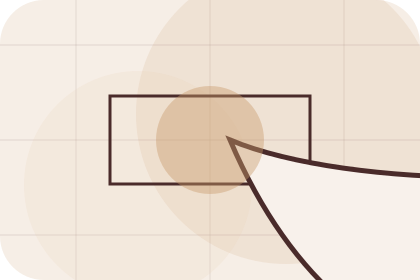
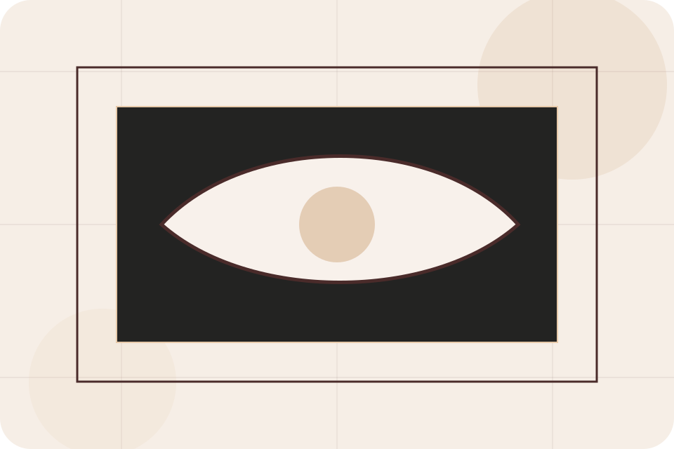
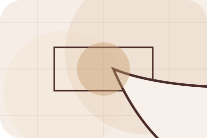
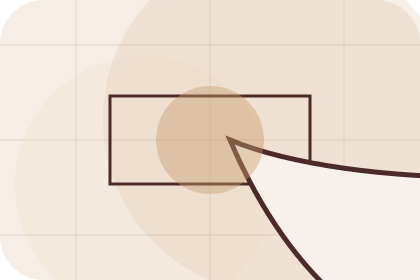
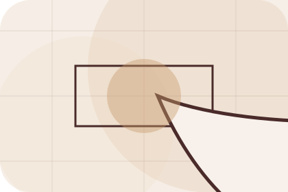
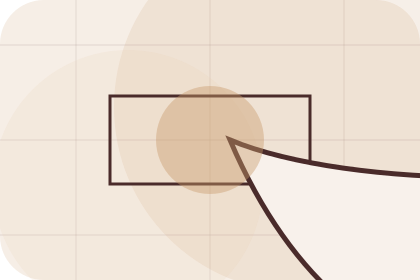
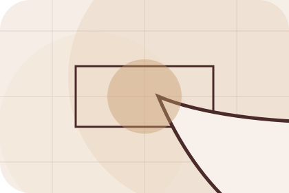
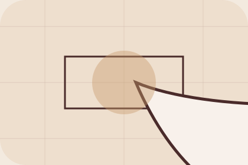

Start
How visitors begin this route and what detail is useful at the first step.
Questions / 01
Questions opens as a clear interiors decision hub: what Room offers, who it helps, why it matters, and which route to take first.
The first screen combines positioning, proof, primary action, and fast internal navigation, so people can act immediately or compare the rest of the questions route with context.
Editorial room hero
Select the closest route and Room keeps the next step, proof, and follow-up expectation aligned with taste and home confidence.

Questions / 03
Budget handles buying doubts directly so visitors can understand timing, fit, limits, and the safest next step.
Answers are short by design: enough to remove hesitation, not so much that the page turns into documentation before the visitor can act.
Explore QuestionsBudget gives the page a specific angle instead of repeating the navigation label.
The material mood cards show what to compare, what to avoid, and what matters most for interiors, furniture & home design visitors.

The final cue points to a useful internal route so the section keeps the journey moving.
Questions / 04
Sourcing handles buying doubts directly so visitors can understand timing, fit, limits, and the safest next step.
Answers are short by design: enough to remove hesitation, not so much that the page turns into documentation before the visitor can act.
Explore QuestionsSourcing gives the page a specific angle instead of repeating the navigation label.
The material mood cards show what to compare, what to avoid, and what matters most for interiors, furniture & home design visitors.
The final cue points to a useful internal route so the section keeps the journey moving.
Questions / 05
Revisions handles buying doubts directly so visitors can understand timing, fit, limits, and the safest next step.
Answers are short by design: enough to remove hesitation, not so much that the page turns into documentation before the visitor can act.
Explore QuestionsRevisions gives the page a specific angle instead of repeating the navigation label.
The material mood cards show what to compare, what to avoid, and what matters most for interiors, furniture & home design visitors.
The final cue points to a useful internal route so the section keeps the journey moving.
Questions / 06
Purchases handles buying doubts directly so visitors can understand timing, fit, limits, and the safest next step.
Answers are short by design: enough to remove hesitation, not so much that the page turns into documentation before the visitor can act.
Explore QuestionsRoom structures purchases around question, answer, and a clear next route so visitors can compare the block quickly before they start the design.
Start DesignQuestions / 07
Install handles buying doubts directly so visitors can understand timing, fit, limits, and the safest next step.
Answers are short by design: enough to remove hesitation, not so much that the page turns into documentation before the visitor can act.
Explore Questions

Install gives the page a specific angle instead of repeating the navigation label.
Questions / 08
Remote handles buying doubts directly so visitors can understand timing, fit, limits, and the safest next step.
Answers are short by design: enough to remove hesitation, not so much that the page turns into documentation before the visitor can act.
Explore QuestionsRemote gives the page a specific angle instead of repeating the navigation label.

The material mood cards show what to compare, what to avoid, and what matters most for interiors, furniture & home design visitors.

The final cue points to a useful internal route so the section keeps the journey moving.
Questions / 09
Support explains the practical scope, best-fit situations, and expected outcome so interiors visitors can compare options without decoding jargon.
The section keeps the offer concrete: what is included, who it is best for, what decision it supports, and which linked route gives the deeper detail.
Open ContactWho should use support and when it belongs in the questions journey.
The practical benefit visitors should expect after choosing this route.
Where to compare details, pricing, support, or contact options before committing.
Questions / 10
Room closes the questions route with a clear action, a quick reminder of the value, and a low-friction way to start the design.
Visitors who are ready can use the primary action. Visitors who are still comparing can scan the section links, proof, and support routes before they start the design.
Start DesignThe final block keeps the choice simple: act now, compare one more proof route, or send enough detail for a focused response.
Start Designtaste and home confidence
A material-led interiors site with luxe moodboards, serif headlines, room selectors, and sourcing CTAs. Questions ends with a direct path to start the design, plus enough context for visitors who still need to compare.

Start DesignInformation is provided for planning and should be reviewed for the final client, location, and operating rules.